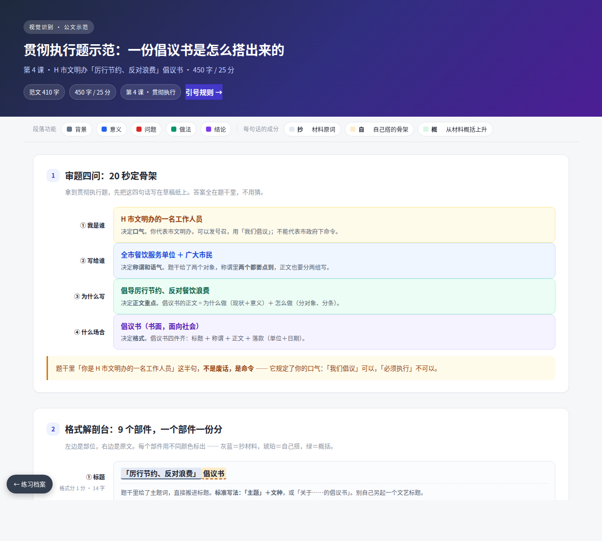

算法说明 · 数据处理 · 结果分析 · 评估记录
流程可视化 · 悬停输出句自动高亮原始输入
哪些取自原文、哪些自行生成 · 成分实测 · 13 个评分点逐点对照
算法总览 · 12 周迭代计划 · 方法速查 · 进度与指标
四轮测试的记录：结论 · 偏差出处 · 标准输出
成长曲线 · 引用占比变化 · 五份分析索引 · 复现的毛病
样本 01 · 4.5/15：三色解剖 + 8 个评分点逐点对照
样本 02 · 7/10：三色解剖 + 7 个评分点逐点对照
样本 03 · 11/15：三色解剖 + 13 个评分点逐点对照
样本 06 · 15/20：三色解剖 + 10 个评分点逐点对照
样本 07 · 21/25：三色解剖 + 12 个评分点逐点对照

倡议书全流程示范 · 410 字：九件格式解剖 + 逐句溯源 + 字数配比
10 个引号提法 100% 是评分点 · 提法／引语／空词／修辞四种处理
四种定位法 · 分段切分法 · 长度阈值 · 输出格式规范
分类 · 关联分析 · 策略生成 · 流程执行 · 长篇输出
领域词表 · 动作词库 · 句式模板 · 长文框架
每天 15 分钟积累法 · 一份样本一张卡
评分档位 · 评审五块模板 · 常见偏差诊断表
每次分析必须做满的九步 · 三条质量红线
 流程可视化
流程可视化